W nowej podstawie programowej, w przeciwieństwie do starej (2015) obowiązują również wyższe hybrydyzacje, powyżej \(sp^{3}\), natomiast rozwiązując stare zadania maturalne CKE raczej nie spotkamy z wyższymi hybrydyzacjami. Tym bardziej trzeba ich się nauczyć, gdyż temat nieprzećwiczony można łatwiej zapomnieć.
Podczas rysowania struktur widząc związek jonowy (szczególnie uwaga na sole i wodorotlenki alkaliczne) należy ustalić najpierw jakie jony wchodzą w jego skład, a następnie rozrysować ich strukturę niezależnie od siebie. Czyli np. widząc \(NH_{4}NO_{3}\) widzimy że jest to sól, a więc rysujemy oddzielnie kation \(NH_{4}^{+}\) i anion \(NO_{3}^{-}\).
Możemy czasem również natrafić na problem z ustaleniem co jest atomem centralnym w strukturze. W tym wypadku musimy rozrysować wariantami. Można sugerować się, że zwykle atom centralny jest tym atomem nietypowym, zwykle również jest bardziej z lewej strony i w dół układu okresowego ( ten o mniejszym charakterze niemetalicznym)
W celu ustalenia poprawnej struktury Lewisa należy zwykle postępować wedle procedury. Oczywiście są od niej wyjątki, tych się należy nauczyć na pamieć. Jednocześnie strukturę jonów często występujących na maturze, z uwagi na oszczędność czasu, wypada również znać na pamięć, natomiast w momencie, w którym zapomnimy ich stosujemy przedstawione procedury, aby nie popełnić błędu.
Dla wygody zapisu w momencie, w którym atom drugiej grupy oraz czasem siarka i chlor osiągną oktet elektronowy należy zamknąć ich strukturę łącząc ich elektrony w pary. Rysunek staje się znacznie bardziej przejrzysty.
Procedurę możemy stosować również dla drobin zbudowanych z pierwiastków leżących w tym samym okresie. Rozpatrzmy ją na przykładzie drobin: \(NO_{3}^{-}\),\(SO_{3}^{2 -};HClO_{3}\ \)i\(\ NH_{4}^{+}\).
Narysuj wszystkie atomy ze swoimi elektronami walencyjnymi, ustal (lub po prostu strzel) co jest atomem centralnym.
Azot ma pięć elektronów, siarka i tlen po sześć, a wodór jeden, co wiemy z położenia w układzie okresowym
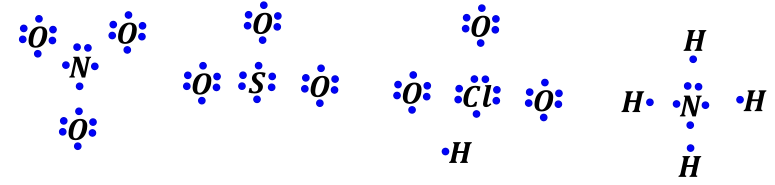
Jeżeli kation to zabierz elektron(y) mniej elektroujemnemu/ym (bo szybciej piwo Ci da osoba, która go nie lubi), jezeli anion to dodaj elektron(y) bardziej elektrojemnemu/ym (bo wiadomo, że pijaki się zlecą po darmowe piwo)
W \(NO_{3}^{-}\) dodatkowy elektron dajemy jednemu z atomów tlenu (bo bardziej elektroujemny niż azot), dla \(SO_{3}^{2 -}\) dwa nadmiarowe elektrony rozdysponujemy między dwa atomy tlenu, a w przypadku \(NH_{4}^{+}\) elektron zabieramy jednemu z atomów wodoru (bo wodór mniej elektroujemny niż azot)
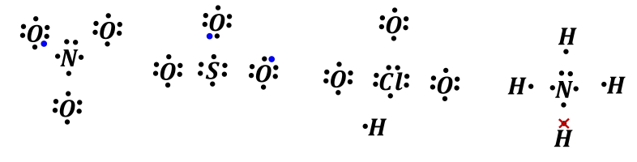
Jeżeli kwas ( nie wyjątek: \(HCOOH;H_{3}PO_{3};\ H_{3}PO_{2}\)) to połącz wodór/ory z tlenem/ami, które mają sześć elektronów.
Wśród rozważanych przykładów kwasem jest \(HClO_{3},\ \)nie jest on wyjątkiem, więc robimy wiązanie między wodorem i jednym z tlenów.
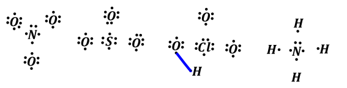
Połącz te, które mają nieparzystą ilość e^- z atomem centralnym, tak, aby żaden nie miał nieparzystej ilości elektronów. Ewentualna nieparzysta ilość elektronów się ciągnie potem jak smród po gadaciach i nie za bardzo możemy z nią cokolwiek zrobić.
W tym wypadku \(NO_{3}^{-}\) widzimy, że nieparzystą ilość elektronów ma tlen, do którego wcześniej dopisaliśmy elektron (łącznie 7 elektronów). Dla \(HClO_{3}\) nieparzystą ilość elektronów ma tlen, który wcześniej zrobił wiązanie z wodorem (również 7 elektronów).Rozpatrując anion \(SO_{3}^{2 -}\) widzimy nieparzystą ilość elektronów dla dwóch atomów tlenu, tym, którym dodaliśmy po elektronie. Dla \(NH_{3}\) nieparzystą ilość elektronów mają wodory.
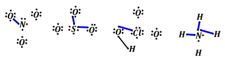
Po narysowaniu wiązań możemy powiedzieć, iż oktety elektronowe uzyskują: atom tlenu w \(NO_{3}^{-}\); dwa atomy tlenu dla \(SO_{3}^{2 -}\); atom tlenu i chloru w \(HClO_{3}\) oraz azot w \(NH_{4}^{+}\), co możemy zaznaczyć łącząc ich elektrony w pary kreskami, rysunek zyskuje przez to na przejrzystości
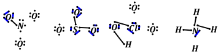
Zrób wiązania podwójne pomiędzy atomem centralnym a atomami bocznymi tak, aby atom centralny miał oktet. Wykorzystujemy w tym kroku tylko wiązania podwójne. Taki układ występuje tylko dla \(NO_{3}^{-}\); reszta struktur ma już oktet na atomie centralnym.
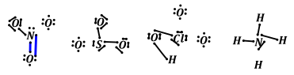
Łącząc elektrony atomów, które uzyskały oktet otrzymujemy:
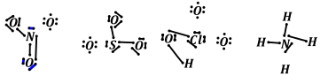
Resztę atomów przyłącz wiązaniami koordynacyjnymi do atomu centralnego, aż do uzyskania oktetu przez atomy ligandów.
Dla analizowanych struktur widzimy, iż wiązaniami koordynacyjnymi możemy przyłączyć tlenu do atomu centralnego oraz atom wodoru dla \(NH_{4}^{+}\)
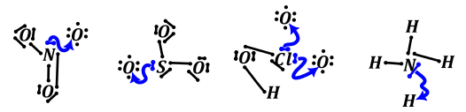
Łącząc elektrony atomów, które uzyskały oktet otrzymujemy:
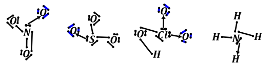
Dla jonów strukturę weź w nawias kwadratowy, napisz ładunek
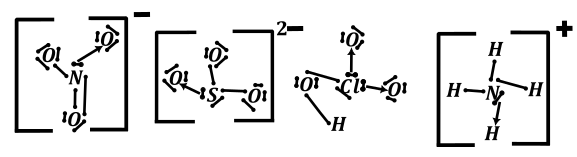
Struktury, które są wyjątkami, a więc musimy się nauczyć ich na pamięć.:
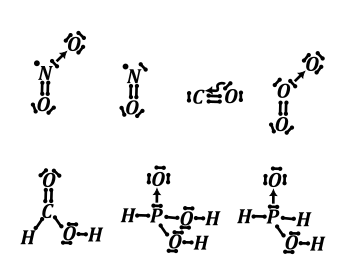
Reguła dotycząca wyjątków – w strukturach elektronowych zawierających atomy „pechowej” 13 grupy mogą one mieć sekstet elektronowy (sześć elektronów), a nie oktet. Najczęściej sekstet występuje dla obojętnych cząsteczek, a oktet dla anionów. Wyjątkiem również jest atom berylu, dla którego strukturę można zakończyć na czterech elektronach. Należy sobie zdawać sprawę, iż jedno i drugie to uproszczenie na potrzeby matury, jednak bez informacji wstępnej nie wychylamy się z tą wiedzą. Wodór oczywiście kończymy na dublecie elektronowym tzn. na dwóch elektronach.
Dla związków boru często występuje dimeryzacja dwóch cząsteczek, natomiast w związkach boru z wodorem występują wiązania bananowe (trzyatomowe dwuelektrodowe), jednak znacznie wykracza to po za zakres matury.
Związki boru wyglądają maturalnie w taki sposób:
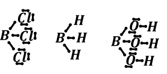
Natomiast poprawniejszymi strukturami, ale niematuralnymi są:
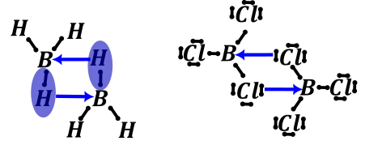
\[B(OH)_{3} + H_{2}O \rightleftarrows B(OH)_{4}^{-} + H^{+}\]
Sekstet elektronowy dla atomów jest układem niestabilnym, każdy pierwiastek dąży do oktetu elektronowego. Powoduje to powstanie tzw. luki elektronowej na tych atomach. Związki takie mogą wykorzystywać tę lukę elektronową do utworzenia wiązania koordynacyjnego z atomem, który ma wolną parę elektronową. Związki posiadające sekstet elektronowy nazywamy kwasami Lewisa.
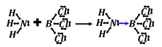
Siłą napędową kwasowych właściwości kwasu borowego jest deficyt elektronów na atomie boru (sześć elektronów). Umożliwia to przyłączenie cząsteczki wody (mającej dwie wolne parę elektronowe) wiązanie koordynacyjnym i następcze oderwanie protonu.
\[B(OH)_{3} + H_{2}O \rightleftarrows B(OH)_{4}^{-} + H^{+}\]
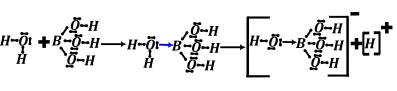
Dla pierwiastków 3 okresu i dalszych możemy mieć przekroczoną regułę oktetu, tzn. możemy mieć struktury, w których atomy te mają więcej niż osiem elektronów walencyjnych. Wynika to z bliskości energii wolnych orbitali d do ostatniej obsadzonej podpowłoki p i tym samym ich dostępności dla elektronów.
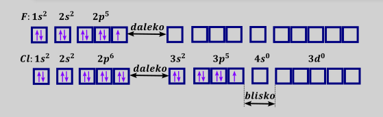
Jednocześnie atomy trzeciego i dalszych okresów nie tworzą z atomami drugiego okresu wiązań pi z uwagi na inne promienie atomów i tym samym słabe nakładanie się orbitali p.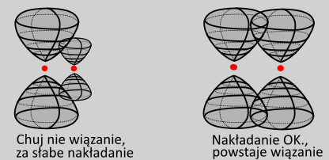
Te dwa czynniki (możliwość pogwałcenia reguły oktetu oraz brak możliwości tworzenia wiązań podwójnych) implikuje konieczność modyfikacji przedstawionej procedury ustalania wzorów Lewisa.
Rozpatrzmy na przykładzie związku gazu szlachetnego \(XeO_{2}F_{2}\)
Narysuj wszystkie atomy ze swoimi elektronami walencyjnymi, ustal (lub po prostu strzel) , który z nich jest atomem centralnym.
Ksenon ma 8 elektronów walencyjnych, tlen sześć a fluor siedem. Atom centralnym będzie najpewniej ten najbardziej nietypowy – ksenon.
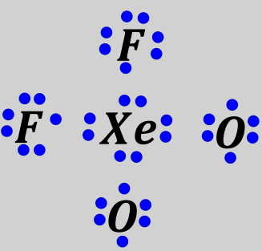
Jeżeli kation to zabierz elektron(y) mniej elektroujemnemu/ym (bo szybciej piwo Ci da osoba, która go nie lubi), jezeli anion to dodaj elektron(y) bardziej elektrojemnemu/ym (bo wiadomo, że pijaki się zlecą po darmowe piwo)
Ten punkt nie dotyczy naszego związku
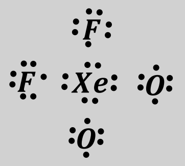
Jeżeli kwas tlenowy to połącz wodór/ory z tlenem/ami (tymi co mają sześć elektronów)
Ten punkt nie dotyczy naszego związku
Połącz te, które mają nieparzystą ilość e^- z atomem centralnym, tak, aby żaden nie miał nieparzystej ilości elektronów. Ewentualna nieparzysta ilość elektronów się ciągnie potem jak smród po gaciach i nie za bardzo możemy z nią cokolwiek zrobić. Dopiero po tym etapie narysuj kreski (pary elektronowe) zamiast dwóch elektronów na atomie centralnym.
W przypadku analizowanego związku nieparzystą ilość elektronów mają oba fluory, łączymy je z atomem centralnym - ksenonem
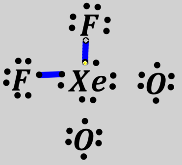
Po sparowaniu elektronów dla fluorów – uzyskały one oktet oraz dla ksenonu struktura wygląda następująco:
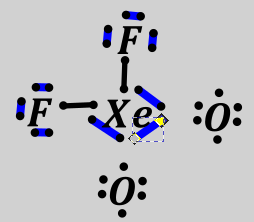
Resztę atomów przyłącz wiązaniami koordynacyjnymi do atomu centralnego, aż do uzyskania oktetu przez atomy ligandów.
Dla analizowanej struktury przyłączamy atomy tlenu do atomu centralnego – ksenonu.
Tutaj widzimy, iż wiązaniami koordynacyjnymi możemy przyłączyć tlenu do atomu centralnego oraz atom wodoru dla \(NH_{4}^{+}\)
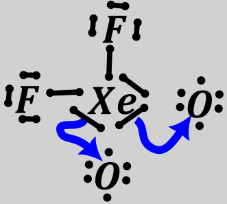
Po zaznaczeniu osiągnięcia oktetu przez oba tleny otrzymujemy:
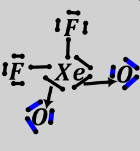
Dla jonów strukturę weź w nawias kwadratowy, napisz ładunek
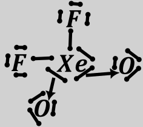